토목기사 (2004-03-07 기출문제)
1과목: 응용역학
1. 정 6각형틀의 각 절점에 그림과 같이 하중 P가 작용할 때 각 부재에 생기는 인장응력의 크기는?
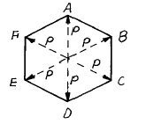
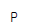
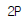
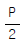
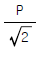
(정답률: 58%)

2. 다음 그림에서 빗금친 부분의 x 축에 관한 단면 2차 모멘트는?
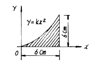
- Ix = 56.2 cm4
- Ix = 58.5 cm4
- Ix = 61.7 cm4
- Ix = 64.4 cm4
(정답률: 15%)
3. 다음 그림과 같이 두개의 재료로 이루어진 합성단면이 있다. 이 두 재료의 탄성계수비가
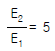
일 때 이 합성 단면의 중립축의 위치 C를 단면 상단으로 부터의 거리로 나타낸 것은?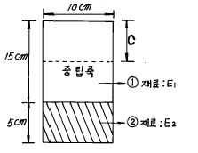
- C = 7.75 ㎝
- C = 10.00 ㎝
- C = 12.25 ㎝
- C = 13.75 ㎝
(정답률: 11%)
4. 지간이 ℓ 인 단순보 위를 그림과 같이 이동하중이 통과할때 지점 B로 부터 절대 최대 휨모멘트가 일어나는 위치는?
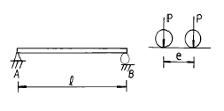
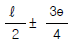
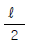
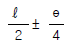
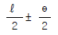
(정답률: 60%)
5. 그림과 같은 보에서 하중 P만에 의한 C점의 처짐은? (단, 여기서 EI는 일정하고 EI = 2.7× 1011 kg·cm2 이다.)
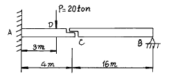
- 0.7 cm
- 2.7 cm
- 1.0 cm
- 2.0 cm
(정답률: 25%)
6. 그림에서 사선부분은 단면의 핵을 표시한 것이다. e의 거리는?
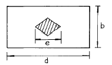
- e = b
- e = d/2
- e = d/3
- e = d/4
(정답률: 31%)
7. 다음 그림과 같은 라멘에서 D 지점의 반력은 ?
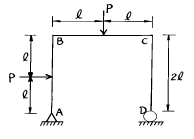
- 0.5 P(戰)
- P(戰)
- 1.5 P(戰)
- 2.0 P(戰)
(정답률: 43%)
8. 다음과 같이 A 점에 연직으로 하중 P 가 작용하는 트러스에서 A 점의 수직처짐량은? (단, AB 부재의 축강도는 EA, AC 부재의 축강도는
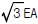
)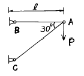
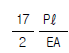
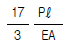
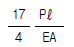
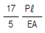
(정답률: 40%)
9. 다음 그림에서 중앙점의 휨 모멘트는 얼마인가?
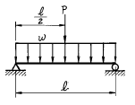
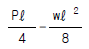
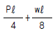
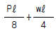
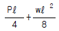
(정답률: 36%)
10. 등분포하중을 받는 다음 연속보의 지점 모멘트 MB는 얼마인가? (단, 휨강성 EI는 일정함)
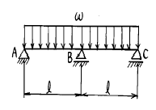
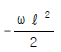
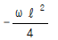
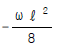
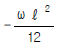
(정답률: 40%)
11. 단면 30㎝× 40㎝, 지간이 10m인 단순보가 600㎏/m의 등분포 하중을 받을 때 최대 전단응력은?
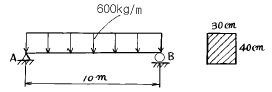
- 3.75 ㎏/cm2
- 4.75 ㎏/cm2
- 2.50 ㎏/cm2
- 3.50 ㎏/cm2
(정답률: 60%)
12. 길이가 ℓ 이고 지름이 D인 원형단면 기둥의 세장비는?
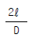
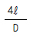
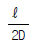
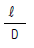
(정답률: 40%)
13. 단면의 기하학적 성질에 대한 다음 설명 중 틀린 것은?
- 도형의 도심을 지나는 축에 대한 단면 1차모멘트는 0이다.
- 단면 2차모멘트의 단위는cm4 이다.
- 삼각형의 도심은 임의의 두 중심선의 교점이며, 밑변에서 h/3의 높이가 된다.
- 단면 2차모멘트 가운데 최대 값을 가지는 것은 도심축에 대한 단면 2차 모멘트이다.
(정답률: 50%)
14. 그림에서 P1이 C점에 작용하였을 때 C 및 D점의 수직 변위가 각각 0.4㎝, 0.3㎝이고, P2가 D점에서 단독으로 작용하였을 때 C, D점의 수직 변위는 0.2㎝, 0.25㎝였다. P1과 P2가 동시에 작용하였을 때 P1 및 P2가 하는 일을 구하면?
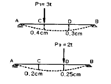
- 1.25t·㎝
- 1.45t·㎝
- 2.25t·㎝
- 2.45t·㎝
(정답률: 7%)
15. 다음 그림에서 P1=20kg, P2=20kg 일 때 P1과 P2의 합 R의 크기는?
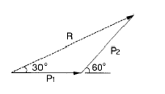
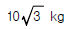
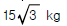
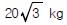
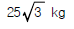
(정답률: 27%)
16. 다음 내민보에서 B점의 모멘트와 C점의 모멘트의 절대값의 크기가 같게하기 위한
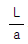
의 값을 구하면?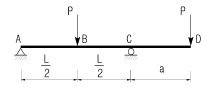
- 6
- 4.5
- 4
- 3
(정답률: 27%)
17. 다음 구조물에서 하중이 작용하는 위치에서 일어나는 처짐의 크기는?
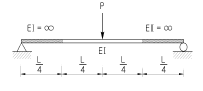
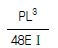
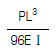
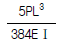
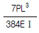
(정답률: 44%)
18. 기둥의 중심에 축방향으로 연직 하중 P = 120 ton이, 기둥의 횡방향으로 풍하중이 역삼각형 모양으로 분포하여 작용할 때 기둥에 발생하는 최대 압축응력은?
- 375kg/cm2
- 625kg/cm2
- 1000kg/cm2
- 1625kg/cm2
(정답률: 27%)
19. 중공 원형 강봉에 비틀림력 T가 작용할 때 최대 전단 변형율 γmax=750× 10-6rad으로 측정되었다. 봉의 내경은 60mm이고 외경은 75mm일 때 봉에 작용하는 비틀림력 T를 구하면? (단, 전단탄성계수 G=8.15× 105kg/cm2 )
- 29.9t·cm
- 32.7t·cm
- 35.3t·cm
- 39.2t·cm
(정답률: 34%)
20. 다음 트러스의 부재력이 0인 부재는?
- 부재 a-e
- 부재 a-f
- 부재 b-g
- 부재 c-h
(정답률: 55%)
2과목: 측량학
21. 개방트래버스에서 DE 측선의 방위는?
- N 50° W
- S 50° W
- N 30° W
- S 30° W
(정답률: 22%)
22. 그림과 같은 단곡선에서 외할(E)의 크기는?
- 21.⑤m
- 17.12m
- 15.47m
- 14.48m
(정답률: 25%)
23. 완화곡선에 대한 설명 중 옳지 않은 것은?
- 곡선반경은 완화곡선의 시점에서 무한대, 종점에서 원곡선 R로 된다.
- 완화곡선의 접선은 시점에서 직선에, 종점에서 원호에 접한다.
- 렘니스케이트(lemniscate) 곡선은 곡선체감을 전제로 하여 얻어진 완화곡선이다.
- 종점에 있는 캔트는 원곡선의 캔트와 같다.
(정답률: 18%)
24. 원격탐측에 사용되고 있는 센서 중 수동적 센서가 아닌 것은?
- 전자 스캐너
- 다중파장대 사진기
- 비디콘 사진기(Vidicon camera)
- 레이다(Ladar)
(정답률: 23%)
25. 우리나라의 지형도에서 해안선의 기준은?
- 만조시의 해안
- 최저조위면
- 평균해면
- 평균조위면
(정답률: 17%)
26. 중력이상에 대한 설명 중 맞지 않는 것은?
- 일반적으로 실측 중력값과 계산식에 의한 중력값은 일치하지 않는다.
- 중력이상이 음(-)이면 그 지점 부근에 무거운 물질이 있다는 것을 의미한다.
- 중력이상에 의해 지표밑의 상태를 측정할 수 있다.
- 중력이상은 지하의 물질밀도가 고르게 분포되어 있지않기 때문이다.
(정답률: 14%)
27. 하천에서 수애선 결정에 관계되는 수위는?
- 갈수위(DWL)
- 최저수위(HWL)
- 평균최저수위(NHWL)
- 평수위(OWL)
(정답률: 53%)
28. 평면삼각형에서 2변의 길이가 30km, 25km이고 그 사이각이 50° 일 때 이 삼각형의 구과량은? (단, 지구의 반경은 6370km로 가정함.)
- 0.9″
- 1.09″
- 1.32″
- 1.46″
(정답률: 22%)
29. 22km × 12km 지역을 축척 1/15,000의 항공사진을 촬영할때 필요한 모형의 수는? (단, 사진크기 23cm × 23cm, 종중복도 60%, 횡중복도 30%이며 안전율은 고려치 않는다.)
- 80매
- 85매
- 90매
- 95매
(정답률: 14%)
30. A, B 두 점간의 비고를 구하기 위해 (1), (2), (3)경로에 대하여 직접고저측량을 실시하여 다음과 같은 결과를 얻었다. A, B 두 점간의 고저차의 최확값은?
- 32.236m
- 32.238m
- 32.241m
- 32.243m
(정답률: 19%)
31. 수준망을 각각의 환에 따라 폐합차를 구한 결과 다음과 같다. 폐합차의 한계를 로 할 때 우선적으로 재측할 필요가 있는 노선은? (단, S:거리[km])
- 립노선
- 마노선
- 만노선
- 맏노선
(정답률: 0%)
32. 노선의 곡률반경이 100m, 곡선길이가 20m일 경우 클로소이드(clothoid)의 매개변수(A)는?
- 45m
- 22m
- 40m
- 60m
(정답률: 25%)
33. 교각 Ｉ= 90° , 곡선반경 R=150m 인 단곡선의 교점(Ｉ.P)의 추가거리가 1139.250m 일 때 곡선의 종점(E.C)까지의 추가거리는?
- 875.375m
- 989.250m
- 1224.869m
- 1374.825m
(정답률: 10%)
34. 절대표정에 대한 설명 중 틀린 것은?
- 표고, 경사의 결정
- 상호표정 다음에 행함
- 화면거리의 조정
- 축척의 결정
(정답률: 37%)
35. 축척이 의 도상에서 어떤 토지개량구역의 면적을 구한 결과가 40.52cm2 이었다면 이 구역의 실면적은?
- 10,130,000m2
- 10,140,000m2
- 10,150,000m2
- 10,160,000m2
(정답률: 39%)
36. 다음 중 지성선에 해당하지 않는 것은?
- 구조선
- 능선
- 계곡선
- 경사변환선
(정답률: 22%)
37. 1600m2의 정사각형 토지면적을 0.5m2까지 정확하게 구하기 위해서 필요한 변길이의 관측 정확도는?
- 6.3mm
- 7.2mm
- 8.3mm
- 9.6mm
(정답률: 48%)
38. 단열삼각망의 조정조건이 아닌 것은?
- 측점조건
- 각조건
- 방향각조건
- 변조건
(정답률: 18%)
39. 축척이 1/5000인 지형도 상에서 어떤 산정으로부터 산밑까지의 거리가 50㎜이다. 산정의 표고가 125m, 산 밑면의 표고가 75m이며 등고선의 간격이 일정할 때 이 사면의 경사는 몇 % 인 ?
- 10 %
- 15 %
- 20 %
- 25 %
(정답률: 7%)
40. 평판측량에서 도상점의 위치 허용오차를 0.2mm로 볼 때 구심오차를 6cm까지 허용할 수 있는 축척은 얼마까지 인가?
- 1/100
- 1/200
- 1/300
- 1/600
(정답률: 12%)
3과목: 수리학 및 수문학
41. 비중 0.9인 빙산이 비중 1.02인 해수에 떠 있고 노출된 부분의 부피를 1이라고 하면 빙산 전체의 부피는?
- 8.5
- 9.0
- 9.2
- 10.4
(정답률: 19%)
42. 그림과 같이 반지름 R인 원형관에서 물이 층류로 흐를 때 중심부에서의 최대속도를 VC라 할 경우 평균속도 Vm은?
(정답률: 34%)
43. 다음 중 오리피스(Orifice)의 이론과 가장 관계가 없는 것은?
- 토리첼리(Torricelli) 정리
- 베르누이(Bernoulli) 정리
- 베나콘트랙타(Vena Contracta)
- 모세관현상의 원리
(정답률: 60%)
44. 여과량이 2m3/sec이고 동수경사가 0.2, 투수계수가 1cm/sec일 때 필요한 여과지 면적은?
- 1,500m2
- 500m2
- 2,0m2m2
- 1,000m2
(정답률: 40%)
45. 사각형 단면에서 한계수심이 발생하는 조건으로 옳은 것은? (단, hc = 한계수심, he = 비 에너지)
- hc는 he가 최대일 때의 수심을 의미한다.
- 한계수심보다 큰 수심으로 흐를 때 사류라 한다.
(정답률: 25%)
46. 다음 중 수위-유량 관계곡선의 연장방법이 아닌 것은?
- 전대수지 방법
- Stevens 방법
- Thiessen 가중 방법
- Manning공식에 의한 방법
(정답률: 19%)
47. 미계측 유역에 대한 단위유량도의 합성방법이 아닌 것은?
- Clark 방법
- Horton 방법
- Snyder 방법
- SCS 방법
(정답률: 35%)
48. 비압축성유체의 연속방정식을 표현한 것으로 가장 올바른 것은?
- Q = ρ AV
- ρ1A1 = ρ2A2
- Q1A1V1 = Q2A2V2
- A1V1 = A2V2
(정답률: 42%)
49. 동일한 유체에 동일한 재료를 사용하여 모관상승고를 구하였다. 직경 d 인 원형관을 세웠을 때의 상승고를 ha,간격 d인 나란한 연직 평판을 세웠을 때의 상승고를 hb라 할 때 올바른 것은?
- ha = 2hb
- hb = 2ha
- ha = 4hb
- hb = 4ha
(정답률: 6%)
50. 비피압 대수층 우물의 경우 반경 100m지점에서 지하수위가 50m, 지하수위의 경사가 0.⑤, 투수계수가 20m/day일때 유량은?
- 약 28,200m3/day
- 약 42,500m3/day
- 약 36,800m3/day
- 약 31,400m3/day
(정답률: 14%)
51. 유역면적이 1㎞2, 강수량이 1,000mm, 지표유입량이 400,000m3, 지표유출량이 600,000m3, 지하유입량이 100,000m3, 저류량의 감소량이 200,000m3 이라면 증발량은?
- 300,000m3
- 500,000m3
- 700,000m3
- 900,000m3
(정답률: 17%)
52. 다음 그림은 개수로에서 동점성 계수가 일정하다고 할 때 수심 h와 유속 V에 대한 한계 레이놀즈수(Re)와 후르드수(Fr)를 전대수지에 나타낸 것이다. 그림에서 4개의 영역으로 나눌때 난류인 상류를 나타내는 영역은?
- A
- B
- C
- D
(정답률: 23%)
53. 하천모형 실험과 가장 관계가 큰 것은?
- Froude의 상사법칙
- Reynolds의 상사법칙
- Weber의 상사법칙
- Cauchy의 상사법칙
(정답률: 38%)
54. 그림에서 가속도 α = 19.6m/sec2일 때 A점에서의 압력은?
- 1.0t/m2
- 2.0t/m2
- 3.0t/m2
- 4.0t/m2
(정답률: 6%)
55. DAD(Depth-area-duration)해석에 관한 설명 중 옳은 것은?
- 최대 평균 우량깊이, 유역면적, 강우강도와의 관계를 수립하는 작업이다.
- 유역면적을 대수축(logarithmic scale)에 최대평균강 우량을 산술축(arithmetic scale)에 표시한다.
- DAD 해석시 상대습도 자료가 필요하다.
- 유역면적과 증발산량과의 관계를 알 수 있다.
(정답률: 15%)
56. 그림과 같이 유량이 Q, 유속이 V인 유관이 받는 외력 중에서 y축방향의 힘(Fy)에 대한 계산식으로 맞는 것은? (단, ρ : 단위밀도θ1, 및θ2
- Fy = ρ QV(sinθ2 - sinθ1)
- Fy = -ρ QV(sinθ2 - sinθ1)
- Fy = ρ QV(sinθ2 + sinθ1)
- Fy = -ρ QV(sinθ2 + sinθ1)
(정답률: 6%)
57. 직경 50㎝의 원통 수조에서 직경 1㎝의 관으로 물이 유출되고 있다. 관내의 유속이 1.5m/s일 때, 수조의 수면이 저하되는 속도는?
- 3㎝/s
- 0.3㎝/s
- 0.6㎝/s
- 0.06㎝/s
(정답률: 23%)
58. 그림에서 A, B에서의 압력이 같다면 축소관의 지름 d는 약 얼마인가?
- 148㎜
- 200㎜
- 235㎜
- 300㎜
(정답률: 16%)
59. 강우강도(㎜/hr)가 I1 = 200㎜/100min, I2 = 50㎜/30min 및 I3 = 120㎜/80min 일 때 3종의 강우강도 I1, I2 및 I3의 대소(大小)관계가 옳은 것은?
- I1 > I2 > I3
- I1 < I2 < I3
- I1 > I2 < I3
- I1 < I2 > I3
(정답률: 16%)
60. Bernoulli 방정식이 (일정)로 표시될때, 흐름의 가정조건이 아닌 것은? (여기서, V:유속, g:중력가속도, ω :단위중량, P:정압력, z:위치수두, H:전수두)
- 정류
- 비압축성 유체
- 비회전류
- 등류
(정답률: 0%)
4과목: 철근콘크리트 및 강구조
61. 철근 콘크리트 단면의 결정이나 응력을 계산할 때 콘크리트의 탄성계수(elastic modulus : Ec)는 다음의 어느 값으로 취하는가?
- 초기 계수(initial modulus)
- 탄젠트 계수(tangent modulus)
- 할선 계수(secant modulus)
- 영 계수(Young's modulus)
(정답률: 29%)
62. 그림과 같은 단순 PSC보에 등분포하중(자중포함) w=40kN/m(=4tonf/m)가 작용하고 있다. 프리스트레스에 의한 상향력과 이 등분포하중이 비기기 위한 프리스트레스 힘 P는 얼마인가?
- 2133.3kN(=213.33tonf)
- 2400.5kN(=240.⑤tonf)
- 2842.6kN(=284.26tonf)
- 3204.7kN(=320.47tonf)
(정답률: 16%)
63. PS 강선을 긴장할 때 생기는 프리스트레스의 손실 원인이 아닌 것은?
- 콘크리트의 탄성수축에 의한 원인
- 마찰에 의한 원인
- 콘크리트의 건조수축과 크리프에 의한 원인
- 정착단의 활동에 의한 원인
(정답률: 34%)
64. 강도 설계에서 fck = 29 MPa(=290kgf/cm2), fy = 300 MPa(=3000kgf/cm2)일 때 단철근 직사각형보의 균형철근비 (ρb) 값은 ? (여기서, 철근의 탄성계수 E = 2.0× 105 MPa (=2.0× 106kgf/cm2))
- 0.034
- 0.046
- 0.⑤1
- 0.067
(정답률: 20%)
65. 복철근 보의 압축철근에 대한 효과를 설명한 것으로 적절하지 못한 것은?
- 단면 저항 모멘트를 크게 증대시킨다.
- 지속하중에 의한 처짐을 감소시킨다.
- 파괴시 압축 응력의 깊이를 감소시켜 연성을 증대시킨다.
- 철근의 조립을 쉽게한다.
(정답률: 23%)
66. 그림과 같은 단철근 직4각형 보를 강도설계법으로 해석할때 콘크리트의 등가 직4각형의 깊이 a는? (여기서, fck = 21MPa (=210kgf/cm2),fy = 300MPa (=3000kgf/cm2))
- a = 104mm
- a = 94mm
- a = 84mm
- a = 74mm
(정답률: 40%)
67. 2방향 슬래브의 설계에서 직접설계법을 적용할 수 있는제한 조건으로 틀린 것은?
- 슬래브판들은 단변 경간에 대한 장변 경간의 비가 2이하인 직사각형이어야 한다.
- 각 방향으로 3경간 이상이 연속되어야 한다.
- 각 방향으로 연속한 받침부 중심 간 경간 길이의 차이는 긴 경간의 1/3이하이어야 한다.
- 모든 하중은 연직하중으로 슬래브판 전체에 등분포이고, 활하중은 고정하중의 2배 이상이라야 한다.
(정답률: 38%)
68. 나선철근 압축부재 단면의 심부지름이 400mm, 기둥단면 지름이 500mm 인 나선철근 기둥의 나선철근비는 얼마 이상이어야 하는가? (여기서, fck=24MPa(=240kgf/cm2),fy=400MPa(=4,000kgf/cm2))
- 0.0101
- 0.0152
- 0.0206
- 0.0254
(정답률: 20%)
69. 플랜지 유효폭이 b이고 복부폭 bw인 복철근 T형보의 중립축이 복부에 있고 (-)휨모멘트가 작용할 때의 응력계산 방법이 옳은 것은?
- 폭이 b인 직사각형보로 계산
- 폭이 bw인 직사각형보로 계산
- T형보로 계산
- 어느 방법으로 계산해도 된다.
(정답률: 20%)
70. 철근 콘크리트 부재의 전단철근으로 부적당한 것은 ?
- 주인장철근에 30° 이상의 경사로 설치되는 스터럽
- 주인장철근에 45° 이상의 경사로 설치되는 스터럽
- 주인장철근에 30° 이상의 경사로 구부린 굽힘철근
- 나선철근
(정답률: 39%)
71. 그림에 나타난 직사각형 단철근보의 공칭 전단강도Vn을 계산하면? (단, 철근 D13을 스터럽 (stirrup)으로 사용하며, 스터럽 간격은 150 mm이다. 철근 D13 1본의 단면적은 126.7mm2, fck=28MPa(=280 kgf/cm2), fy=350MPa(=3500 kgf/cm2)이다.)
- 120kN(=12.0tonf)
- 133kN(=13.3tonf)
- 253kN(=25.3tonf)
- 385kN(=38.5tonf)
(정답률: 5%)
72. 400mm×400mm의 단면을 가진 띠철근 기둥이 양단 힌지로 구속되어 있으며, 횡방향 상대변위가 방지되어 있지 않은 경우의 단주의 한계 높이는 얼마인가?
- 2.25 m
- 2.64 m
- 3.12 m
- 3.23 m
(정답률: 10%)
73. 도로교의 충격계수식으로 옳은 것은? (단, L은 지간(m))
(정답률: 36%)
74. 인장응력 검토를 위한 L-150× 90× 12인 형강(angle)의 전개 총폭 bg는 얼마인가?
- 228mm
- 232mm
- 240mm
- 252mm
(정답률: 29%)
75. 처짐과 균열에 대한 다음 설명 중 틀린 것은?
- 크리프, 건조수축등으로 인하여 시간의 경과와 더불어 진행되는 처짐이 탄성처짐이다
- 처짐에 영향을 미치는 인자로는 하중, 온도, 습도, 재령, 함수량, 압축철근의 단면적 등이다
- 균열폭을 최소화하기 위해서는 적은 수의 굵은 철근보다는 많은 수의 가는 철근을 인장측에 잘 분포시켜야 한다
- 콘크리트 표면의 균열폭은 피복두께의 영향을 받는다
(정답률: 8%)
76. 경간이 12m인 대칭 T형보에서 슬래브 중심 간격이 2.0m 플랜지의 두께가 300mm, 복부의 폭이 400mm일 때 플랜지의 유효폭은?
- 3000mm
- 2000mm
- 2500mm
- 5200mm
(정답률: 34%)
77. 과소철근 콘크리트보(ρ<ρb)에서 철근이 항복한 후에 계속해서 외부모멘트가 증가할 경우, 중립축의 위치는 어떻게 되는가?
- 압축연단 쪽으로 이동한다.
- 인장연단 쪽으로 이동한다.
- 변화하지 않는다.
- 단면의 도심 쪽으로 이동한다.
(정답률: 7%)
78. PSC 보의 휨 강도 계산 시 긴장재의 응력 fps의 계산은 강재 및 콘크리트의 응력-변형률 관계로부터 정확히 계산할 수도 있으나 콘크리트구조설계기준에서는 fps를 계산하기 위한 근사적 방법을 제시하고 있다. 그 이유는 무엇인가?
- PSC 구조물은 강재가 항복한 이후 파괴까지 도달함에 있어 강도의 증가량이 거의 없기 때문이다.
- PS 강재의 응력은 항복응력 도달 이후에도 파괴 시까지 점진적으로 증가하기 때문이다.
- PSC 보를 과보강 PSC 보로부터 저보강 PSC보의 파괴 상태로 유도하기 위함이다.
- PSC 구조물은 균열에 취약하므로 균열을 방지하기 위함이다.
(정답률: 34%)
79. 다음중 철근콘크리트가 성립되는 조건으로 옳지 않은 것은?
- 철근과 콘크리트와의 부착력이 크다.
- 철근과 콘크리트의 열팽창계수가 거의 같다.
- 철근과 콘크리트의 탄성계수가 거의 같다.
- 철근은 콘크리트 속에서 녹이 슬지 않는다.
(정답률: 30%)
80. 철근 콘크리트 보에서 단부에 스터럽을 배치하는 이유 중에서 가장 적합한 것은?
- 콘크리트의 강도를 높이기 위하여
- 철근이 미끄러지는 것을 방지하기 위하여
- 보에 생기는 휨 모멘트에 저항시키기 위하여
- 보에 생기는 전단응력에 저항시키기 위하여
(정답률: 32%)
5과목: 토질 및 기초
81. 습윤단위 중량이 2.0t/m3, 함수비 20%, Gs = 2.7인 경우 포화도는?
- 86.1%
- 87.1%
- 95.6%
- 100%
(정답률: 14%)
82. 점토 지반의 강성 기초의 접지압 분포에 대한 설명으로 옳은 것은?
- 기초 모서리 부분에서 최대응력이 발생한다.
- 기초 중앙 부분에서 최대응력이 발생한다.
- 기초 밑면의 응력은 어느 부분이나 동일하다.
- 기초 밑면에서의 응력은 토질에 관계없이 일정하다.
(정답률: 37%)
83. 다음 그림에서와 같이 물이 상방향으로 일정하게 흐를때 A,B양단에서의 전수두차를 구하면?
- 1.8m
- 3.6m
- 1.2m
- 2.4m
(정답률: 34%)
84. 동상 방지대책에 대한 설명 중 옳지 않은 것은?
- 배수구 등을 설치해서 지하수위를 저하시킨다.
- 모관수의 상승을 차단하기 위해 조립의 차단층을 지하수위보다 높은 위치에 설치한다.
- 동결 깊이보다 낮게 있는 흙을 동결하지 않는 흙으로 치환한다.
- 지표의 흙을 화학약품으로 처리하여 동결온도를 내린다.
(정답률: 19%)
85. 지표가 수평인 곳에 높이 5m의 연직옹벽이 있다. 흙의 단위중량이 1.8t/m3, 내부 마찰각이 30o 이고 점착력이 없을 때 주동토압은 얼마인가?
- 4.5 t/m
- 5.5 t/m
- 6.5 t/m
- 7.5 t/m
(정답률: 32%)
86. 점착력이 0.8t/m2, 내부 마찰각이 30° , 단위체적중량1.6t/m3인 흙이 있다. 이 흙에 인장균열은 약 몇m 깊이까지 발생할 것인가?
- 6.92m
- 3.73m
- 1.73m
- 1.0m
(정답률: 28%)
87. 다음의 시험법중 측압을 받는 지반의 전단강도를 구하는데 가장 좋은 시험법은?
- 일축압축 시험
- 표준관입 시험
- 콘관입 시험
- 삼축압축 시험
(정답률: 27%)
88. 무게 320㎏인 드롭햄머(drop hammer)로 2m의 높이에서 말뚝을 때려 박았더니 침하량이 2㎝ 이었다. Sander의 공식을 사용할 때 이 말뚝의 허용지지력은?
- 1,000 ㎏
- 2,000 ㎏
- 3,000 ㎏
- 4,000 ㎏
(정답률: 35%)
89. 도로지반의 평판재하실험에서 1.25mm 침하될 때 하중강도가 2.5kg/cm2일 때 지지력계수 K는?
- 2kg/cm3
- 20kg/cm3
- 1kg/cm3
- 10kg/cm3
(정답률: 14%)
90. 실트, 점토가 물속에서 침강하여 이루어진 구조로 단립구조보다 간극비가 크고 충격과 진동에 약한 흙의 구조는?
- 분산구조
- 면모구조
- 낱알구조
- 봉소구조
(정답률: 7%)
91. sand drain 공법에서 sand pile을 정삼각형으로 배치할때 모래기둥의 간격은?(단, pile의 유효지름은 40㎝ 이다.)
- 38㎝
- 40㎝
- 42㎝
- 44㎝
(정답률: 25%)
92. 다짐에 대한 다음 설명 중 틀린 것은?
- 세립토가 많을수록 최적 함수비는 증가한다.
- 세립토가 많을수록 최대건조단위 중량이 증가한다.
- 다짐곡선이라 함은 건조단위 중량과 함수비 관계를 나타낸 것이다.
- 다짐에너지가 클수록 최적 함수비는 감소한다.
(정답률: 39%)
93. 어떤 시료의 압밀 시험 결과 Cv = 2.3 x 10-3cm2/sec라면 두께 2㎝인 공시체가 압밀도 50%에 소요되는 시간은?
- 1.43분
- 1.53분
- 1.63분
- 1.73분
(정답률: 35%)
94. 식으로 나타내는 액성지수(Liquidity index)에 관한 다음 사항 중 옳지 않은 것은?
- 액성지수의 값은 일반적인 경우 0에서 1사이이다.
- 액성지수의 값이 1에 가깝다는 것은 유동(流動)의 가능성을 뜻한다.
- 액성지수의 값이 0에 가깝다는 것은 안정된 점토를 뜻한다.
- 액성지수의 값은 흙의 투수계수를 추정하는데 이용된다.
(정답률: 18%)
95. 표준관입시험에 관한 설명 중 옳지 않은 것은?
- 표준관입시험의 N값으로 모래지반의 상대밀도를 추정 할 수 있다.
- N값으로 점토지반의 연경도에 관한 추정이 가능하다.
- 지층의 변화를 판단할 수 있는 시료를 얻을 수 있다.
- 모래지반에 대해서도 흐트러지지 않은 시료를 얻을수 있다.
(정답률: 44%)
96. 기초폭 4m의 연속기초를 지표면 아래 3m 위치의 모래 지반에 설치하려고 한다. 이때 표준 관입시험 결과에 의한 사질지반의 평균 N 값이 10일 때 극한 지지력은? (단, Meyerhof 공식 사용)
- 420 t/m2
- 210 t/m2
- 1⑤ t/m2
- 75 t/m2
(정답률: 34%)
97. 어떤 시료에 대해 액압 1.0㎏/cm2를 가해 다음 표와 같은 결과를 얻었다. 파괴시의 축차응력은? (단,피스톤의 지름과 시료의 지름은 같다고 보며 시료의 단면적 Ao = 18cm2, 길이 L = 14㎝이다.)
- 3.⑤㎏/cm2
- 2.55㎏/cm2
- 2.⑤㎏/cm2
- 1.55㎏/cm2
(정답률: 10%)
98. 그림과 같은 정수 중에 있는 포화토의 A-A'면에서의 유효 응력은?
- 12.2t/m2
- 16.0t/m2
- 1.22t/m2
- 1.60t/m2
(정답률: 34%)
99. 활동면위의 흙을 몇개의 연직 평행한 절편으로 나누어 사면의 안정을 해석하는 방법이 아닌 것은?
- Fellenius 방법
- 마찰원법
- Spencer 방법
- Bishop의 간편법
(정답률: 29%)
100. 어떤 흙의 변수위 투수시험을 한 결과 시료의 직경과 길이가 각각 5.0cm, 2.0cm이었으며, 유리관의 내경이 4.5mm, 1분 10초 동안에 수두가 40cm에서 20cm로 내렸다. 이 시료의 투수계수는?
- 4.95× 10-4 cm/s
- 5.45× 10-4 cm/s
- 1.60× 10-4 cm/s
- 7.39× 10-4 cm/s
(정답률: 34%)
6과목: 상하수도공학
101. 하수중의 질소와 인을 동시 제거하기 위해 이용될 수있는 고도처리시스템은?
- Anaerobic Ox ic 법
- 3단 활성슬러지법
- Phostrip 법
- Anaerobic Anox ic Ox ic 법
(정답률: 9%)
102. 슬러지를 혐기성소화법으로 처리할 경우의 호기성소화법에 비하여 갖는 특징으로 틀린 것은?
- 병원균의 사멸률이 낮다.
- 동력시설 없이 연속적인 처리가 가능하다.
- 부산물로 유용한 메탄가스가 생산된다.
- 유지관리비가 적게 소요된다.
(정답률: 25%)
103. 하수도 시설을 계획할 때 일반적으로 목표년도는 몇 년후로 하는가?
- 10년
- 20년
- 30년
- 40년
(정답률: 40%)
104. 우물의 수리에서 자유수면 우물의 평형공식은? (Q=양수량, K=투수계수)
(정답률: 17%)
1⑤. 분류식 하수관거시설에 관한 설명으로 옳지 않은 것은?
- 분류식은 관거오접에 대한 철저한 감시가 필요하다.
- 분류식은 안정적인 하수처리를 실시할 수 있다.
- 분류식은 오수관과 우수관의 별도 매설로 공사비가 많이 든다.
- 분류식은 관거내 퇴적이 적으며 수세효과를 기대할 수 있다.
(정답률: 48%)
106. 1일 28,800m3의 물을 8.8m의 높이로 양수하려고 한다. 펌프의 효율을 80%, 축동력에 15%의 여유를 둘 때 원동기의 소요동력은 몇 kW 인가?
- 41.3
- 35.9
- 30.3
- 29.8
(정답률: 22%)
107. 어떤 폐수의 20℃ BOD5가 200mg/L일 때 BOD1와 최종 BOD값은? (단, 탈산소계수는 0.23day-1(base e)이다.)
- 60mg/L, 293mg/L
- 67mg/L, 233mg/L
- 60mg/L, 233mg/L
- 67mg/L, 293mg/L
(정답률: 25%)
108. 폭 5m, 길이 10m, 수심 4m인 콘크리트 직사각형의 수조 밑바닥에서의 수압강도는?
- 2t/m2
- 4t/m2
- 8t/m2
- 16t/m2
(정답률: 22%)
109. 상수의 정수방법중 염소살균과 오존살균의 장단점을 잘못 설명한 것은?
- 염소살균은 발암물질인 트리할로메탄(THM)을 생성시킬 가능성이 있다.
- 오존살균은 염소살균에 비해 잔류성이 약하다.
- 염소살균은 살균력의 지속성이 우수하다.
- 오존살균은 염소살균에 비해 경제적이다.
(정답률: 37%)
110. 관로의 길이가 460m이고, 관경이 90mm인 관수로에 물이 4m/sec의 유속으로 흐를 때 관수로내에서의 손실수두는? (단, 마찰계수 f=0.03 이다.)
- 약 125m
- 약 130m
- 약 135m
- 약 140m
(정답률: 12%)
111. 활성슬러지 공정에서 2차침전지 반송슬러지의 농도가 16,000mg/ℓ 였다. 폭기조의 MLSS 농도를 2,500mg/ℓ 로 유지하기 위한 반송율은?
- 15.6%
- 18.5%
- 31.2%
- 37.0%
(정답률: 19%)
112. 다음중 도수(conveyance of water)시설에 대한 설명으로 알맞은 것은?
- 상수원으로부터 원수를 취수하는 시설이다.
- 원수를 음용가능하게 처리하는 시설이다.
- 배수지로부터 급수관까지 수송하는 시설이다.
- 취수원으로부터 정수시설까지 보내는 시설이다.
(정답률: 39%)
113. 다음의 인구추정방법 중에서 대상지역의 포화인구를 먼저 추정한 후 계획기간의 인구를 추정하는 방법은?
- 등차급수법
- 등비급수법
- 최소자승법
- 로지스틱 곡선법
(정답률: 39%)
114. 어떤 도시에서 재현기간 5년의 강우강도식이 I= 225/t0.393(mm/h)이고, 배수면적은 0.04km2이며, 유출계수는 0.6이다. 유역경계에서 우수거 입구까지 유입시간이 7분이고 우수거 하단까지의 유하시간이 9분이었다. 합리식에 의하여 우수거 하단에서의 최대계획우수유출량은?
- 0.5045m3/s
- 5.045m3/s
- 50.45m3/s
- 504.5m3/s
(정답률: 17%)
115. 수도물에서 페놀류를 문제삼는 가장 큰 이유는?
- 불쾌한 냄새를 내기 때문
- 경도가 높아서 물때가 생기기 때문
- 물거품을 일으키기 때문
- 물이 탁하게 되고 색을 띠기 때문
(정답률: 29%)
116. Jar-Test는 적정 응집제의 주입량과 적정 pH를 결정하기 위한 시험이다. Jar-Test 시 응집제를 주입한 후 급속교 반후 완속교반을 하는 이유는?
- 응집제를 용해시키기 위해서
- 응집제를 고르게 섞기 위해서
- 플록이 고르게 퍼지게 하기 위해서
- 플록을 깨뜨리지 않고 성장시키기 위해서
(정답률: 50%)
117. 하수관거의 단면형상은 원형, 직사각형, 말굽형, 계란형 등이 있다. 다음중 말굽형의 장점이 아닌 것은?
- 수리학적으로 유리하다.
- 대구경 관거에 유리하며 경제적이다.
- 현장타설의 경우 공사기간이 단축된다.
- 상반부의 아치작용에 의해 역학적으로 유리하다.
(정답률: 5%)
118. 정수 처리에서 염소소독을 실시할 경우 물이 산성일수록 살균력이 커지는 이유는?
- 수중의 OCl 증가
- 수중의 OCl 감소
- 수중의 HOCl 증가
- 수중의 HOCl 감소
(정답률: 36%)
119. 오염된 호수의 심층수에 대한 설명으로 옳은 것은?
- 수온 및 수질의 일변화가 심하다.
- 플랑크톤 농도가 높다.
- 낮은 용존 산소로 인해 수중 생물의 서식에 좋지않다.
- 계절에 따라 물의 성층현상과 부영양화의 결과로 정수(淨水)과정에 좋은 영향을 준다.
(정답률: 34%)
120. 다음은 하수관의 맨홀(man-hole)설치에 관한 사항이다. 틀린 것은?
- 맨홀의 설치간격은 관의 직경에 따라 다르다.
- 관거의 기점 및 방향이 변화하는 곳에 설치한다.
- 관이 합류하는 곳은 피하여 설치한다.
- 맨홀은 가능한한 많이 설치하는 것이 관거의 유지 관리에 유리하다.
(정답률: 6%)